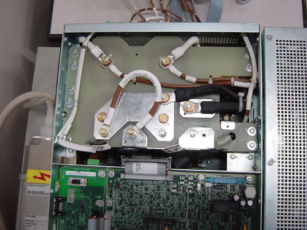

Operating Documentation
Direction 5181178-800, Rev# 16
BrightSpeed Select Service Methods Gen
Module Version 1.0, Version Date 2/16/07
Operating Documentation |
| Required Persons | Preliminary Reqs | Procedure | Finalization |
|---|---|---|---|
| 1 | Not Applicable | 30 mins | included |
Objective: The purpose of this test is to verify that the HV power inverter is working properly. The inverter is commanded at a fixed frequency and is loaded with a short circuit. Verification is made that the inverter currents are correctly set. At the same time verification is made that no High voltage is measured. This test is performed without connecting the HV Tank to the inverter so that no X-ray is generated. Anode rotation and filament drive are not activated during this test. This test requires manual operation.
Summary:
Disconnect HV Tank from Inverter
Short Inverter HV output
Run Diagnostic
Reconnect HV Cable from Inverter to Tank
| Last Revised: | September 2003 |
| Item | Qty | Effectivity | Part# | Manufacturer | |
|---|---|---|---|---|---|
| Short-circuit Cable | 1 | - | 2217152 | - | |
| Condition | Reference | Effectivity |
|---|---|---|
Generator input line in an acceptable range (670VDC +/-10%). | - | - |
PPC kV control board alive and running: DS17 - DS24 Leds are lit successively or a combination of them blink. | - | - |
Inverter gate_cmd board DC supply present: DS300 neon is lit. | - | - |
Inverter quad snubber board DC supply present: DS1-DS2 led are lit. | - | - |
| ||||
| Potential for shock. | ||||
| Voltage may be present. | ||||
| Use proper lockout/tagout procedures before replacing components. |
Remove gantry side and front covers.
Disconnect the HV Tank primary cables from the inverter. Take care not to disconnect at the same time the plate cable connected to the quad snubber board which is tightened with the HV Tank primary cables.
Install the short circuit cable (2217152) included in the first aid spare. See Illustration 1.
Illustration 1: Short Circuit Cable

The parallel inductor and serial inductor must be connected.
Tighten the Azimuth lock pin.
Restore power to the gantry.
Enable the 120VAC and HVDC using the Service Switch Panel. Press ESTOP DRIVES RESET also.
Verify that the DS1-DS2 leds on inverter quad snubbers board is lit.
Verify that the DS300 neon on inverter gate_cmd board is lit.
Launch the [GENERATOR TOOL].
Launch the [SHORTED INVERTER DIAGNOSTIC] tool.
Run the diagnostic. Verify:
No error is reported on the console.
After "exposure", no error is reported.
Remove power to the gantry using proper lockout / tagout procedure.
Remove the short circuit cable, reconnect the HV Tank primary cables.
If this test fails, and the “Inverter Gate Command Test” passed, your system probably has an inverter problem.